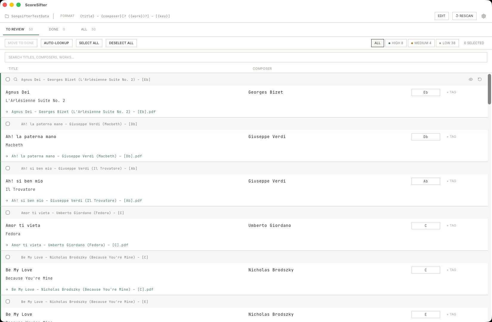
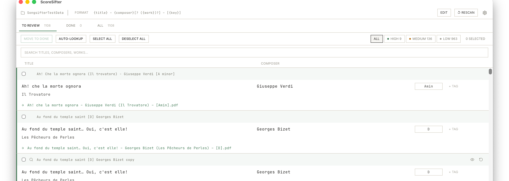
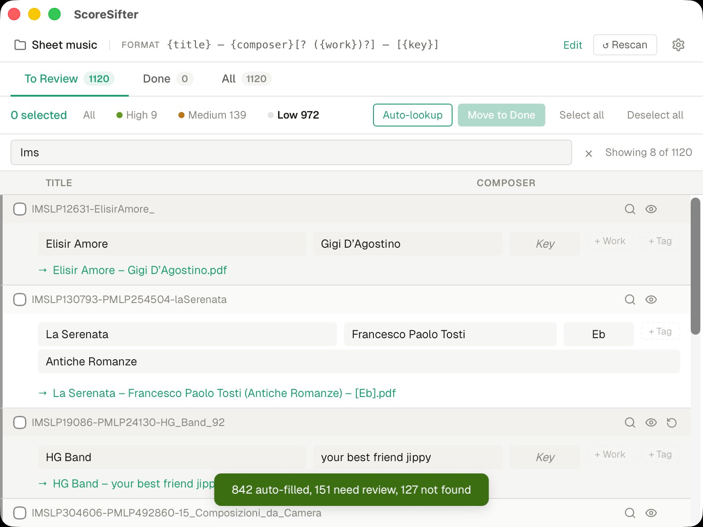
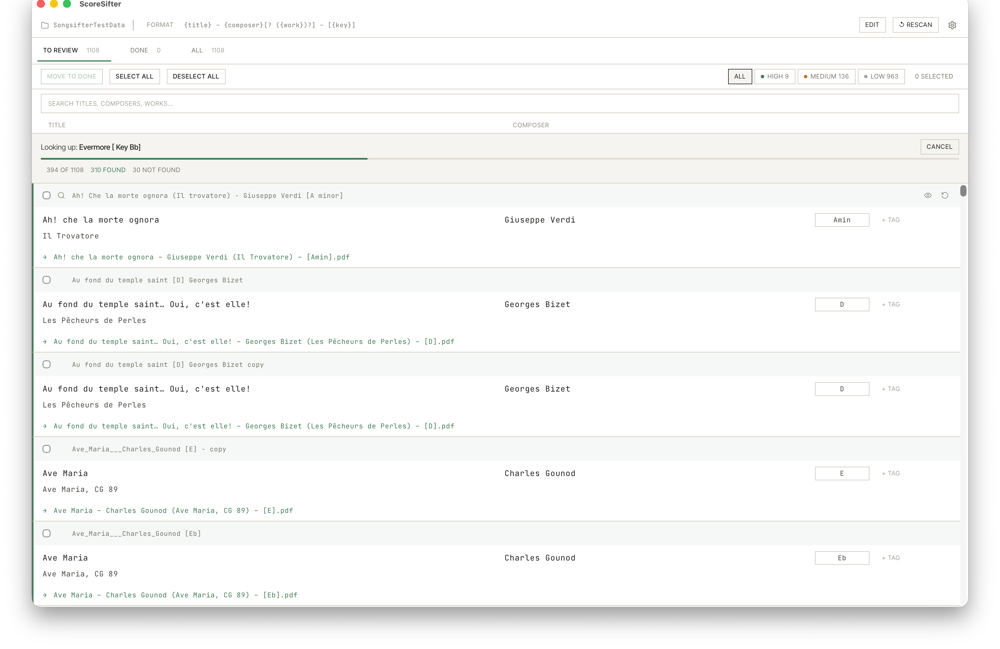
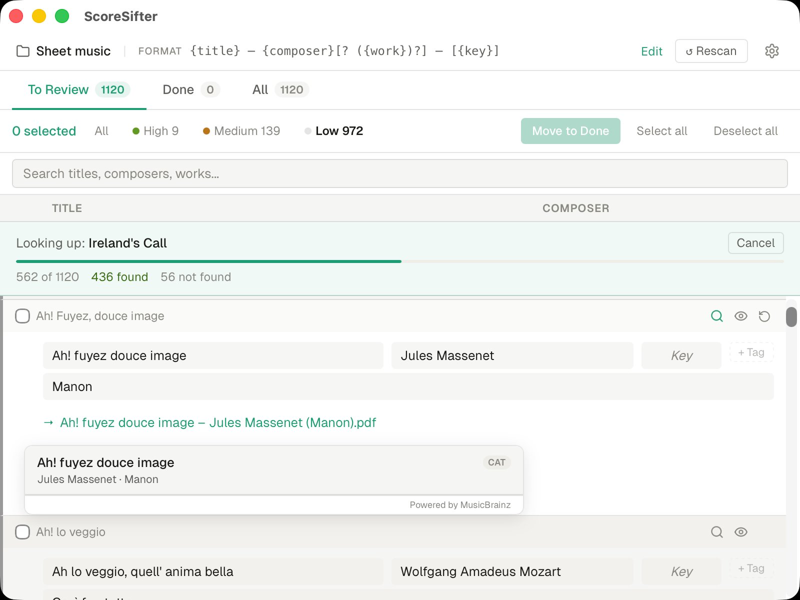
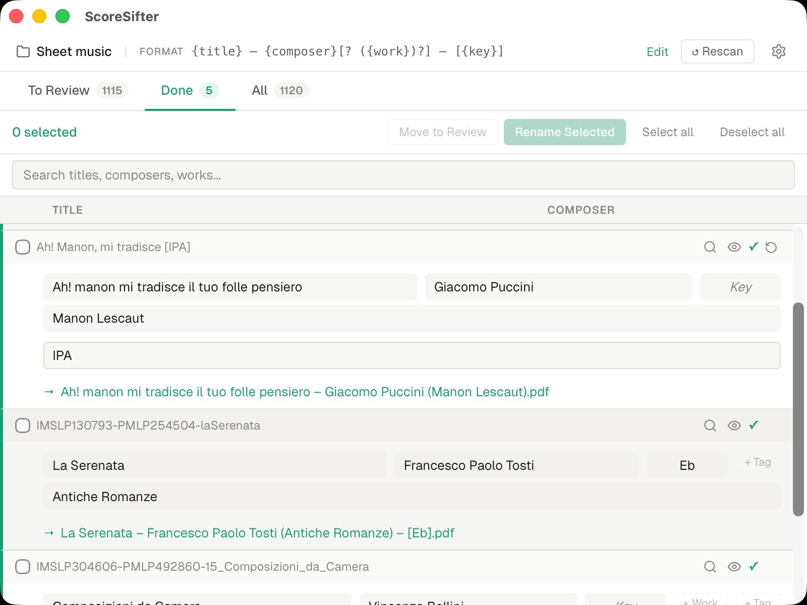

Batch rename
Scan a folder, match every filename against the catalogue, propose new names. You review before anything changes.
Point ScoreSifter at a folder of messy PDFs. It reads the filenames, matches them against a 43k-work catalogue, and renames everything to a clean, consistent format — with metadata written into every file. Offline, reviewable, reversible.
A local-first database of art song, opera arias, lieder and musical theatre — embedded in the app. No network call. No account. No sync.
Everything ScoreSifter does happens on your machine. It never uploads your files or phones home.
Scan a folder, match every filename against the catalogue, propose new names. You review before anything changes.
Writes title, composer, work and key directly into each PDF — compatible with forScore, MobileSheets and other music PDF readers that parse standard metadata.
Pick a preset or write your own. {title}, {composer}, {work}, {key} — with optional segments using [? … ?].
Strips IMSLP noise, library codes, CamelCase, duplicate suffixes. Handles accents and unicode properly.
Art song, opera arias, lieder and musical theatre — embedded in the app. No internet required for the vast majority of lookups.
When the local catalogue doesn't have a match, optionally query MusicBrainz. You decide whether to accept each result.
Every rename run is logged with old → new pairs. Undo a whole batch, or pick out a single file. Nothing is permanent until you close the app.
No account. No cloud. Catalogue ships with the binary. Works on a plane, in a studio with no wifi, anywhere.



Every rename run is preview-then-commit. You see the exact change before it touches disk.
Drag in a directory of PDFs. ScoreSifter walks it, parses every filename, and extracts title, composer and key signals.

Each file is checked against the embedded catalogue. High-confidence matches are flagged; anything uncertain is queued for your review.

Every proposed rename shows old vs new. Edit any field, override the template, skip individual files. Nothing changes until you say so.
ScoreSifter renames the files and writes metadata into every PDF. Done tab shows what changed. Undo is available as long as the app is open.

Five ready-to-go patterns. Or write your own with optional segments and fallbacks.
No trial, no paywall, no account. Use it on as many machines as you want.
ScoreSifter is the tool that convinced me the rest of Kairovo was worth building. It's also the most useful thing I could give back to the music community — a tidy score library makes every other tool work better.
It's also genuinely a one-off utility. Run it once on your library, maybe again when a new folder arrives — and that's it. Once your files are clean, you probably won't need it again. There's nothing to subscribe to because there's nothing ongoing to pay for.
Recital Atlas, AriaDesk and Vocemetry fund the studio.
macOS users: if Gatekeeper blocks the app on first launch, go to System Settings → Privacy & Security and click Open Anyway. This is standard for apps distributed outside the Mac App Store.
Windows users: SmartScreen may show a security warning — click More info → Run anyway to proceed. This is normal for indie apps distributed outside the Microsoft Store.
There are no servers to pay for and no catch — but if ScoreSifter saved you an afternoon of renaming, buying a coffee is a nice way to say so.
Buy me a coffee →ScoreSifter is part of the Kairovo suite — quiet, durable desktop software for people who work in music.
Recital Atlas, AriaDesk and Vocemetry are the paid apps that fund everything. If you find ScoreSifter useful, they're worth a look.
Browse the suite →